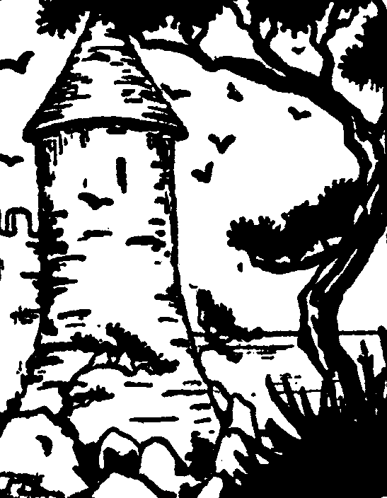

Marc'hek Bran
Ton|
1. Marc'hek Bran a zo bet tizet Rag e kad Kerloan ema bet. (diou wech) 2. E kad Kerloan, e-tal ar mor, Oe tizet mab-bian Bran-Vor. 3. Daoust d'or gounid oe kemeret Ha glaz-alaouret oe kaset. 4. Ha glaz-alaouret pa zeuaz E-barzh eun tour en a ouelaz. 5. "Va c'herent a drid hag a you Ha me war va wele: ah! you! 6. Me garfe kaoud eur c'hannader A zougfe d'am mamm eul lizer!" 7. Ar c'hannader pa oe kavet, Ar marc'heg en deuz kemennet: 8. - Ur gwisk all, va den, a wiski, Gwisk ur c'hlaskour boued a-zevri 9. Va bizoù 'gemeri ivez; Va bizoù aour, en arouez; 10. Ha d'am bro dal' ma tigouezi D'am mamm itron e ziskouezi. 11. Ha mar deu va mamm d'am dasprenn Kannader, arouezi e gwenn; 12. Ha, siwazh din, ma na zeu-hi; Va faotr, e du ec'h arouezi.- 13. Pa zegouezas e bro Leon, E oa o koniañ an itron 14. E oa gant he zud, diouc'h an daol; An delennourien en o roll. 15.- Noz vat deoc'h, itron an ti-mañ: Setu bizoù aour ho mab Bran, 16. E vizoù koulz hag ul lizher: Ret eo e lenn, e lenn e-berr.- 17. -Tavit, telennourien, ho son; Glac'har vras a zo em c'halon; 18. Tavit, telenourien, buan, Paket va mab, ne ouien mann ! 19. Ra farder ul lestr din fenoz, Ma treuzin ar mor antronoz !- 20.Antronoz, eveus e wele, An aotrou Bran a c'houlenne: 21 - Gedour, gedour, din livirit, Lestr-ebet o tont na welit ? 22. - Aotrou marc'heg, na welan-me Nemet ar mor-bras hag an neñv. 23. Ann aotrou Bran a c'houlennas Gant ar gedour, da greizteiz c'hoazh: 24. - Gedour, gedour, din livirit Lestr ebet o tont na welit ? 25. - Aotrou marc'heg, na welan tra Nemet mor-evned o nijal.- 26. An aotrou Bran a c'houlennas Gant ar godour d'ar pardaez c'hoazh. 27. - Gedour, gedour, din livirit Lestr ebet o tont na welit ?- 28. Ar godour-gaou, pa e glevas, C'hoarzhin-droug outañ a reaz: 29. - Ul lestr a welan-me pell-pell Hag eñ foetet gant an avel. 30. - Na pez' arouez ? livirit krenn ! Daoust eo hi du, daoust eo hi gwenn ? 31. - Aotrou marc'heg, 'vel ma welann, Du eo, m'hen toue ruz-glaou-tan !- |
32. Ar marc'heg kaezh, pa 'n deus klevet, Na mui na ken 'n eus lavaret; 33. Distreiñ a reas e zremm c'hlas, Ha gant an derzhienn a grenas . 34. Hag an itron a c'houlenne Gant ar gêriz pa zouare: 35. - Petra nevez a zo amañ Pa glevan ar c'hleier tinsañ ?- 36. Un den kozh en deus lavaret D'an itron pa 'n deus he c'hlevet : 37.- Eur ar marc'heg paket oa amañ, Mervel en deus graet en noz-mañ.- 38. Oa ket he gomz peurlavaret An itron d'an tour zo pignet. 39. En ur redek, o ouelañ ken, Dispak-kaer ganti he blev gwenn. 40. Ken a oa 'r gêriz souezhet, Souezhet bras oc'h he gwelet, 41. Gwelet un itron zivroad Oc'h ober kañv hed ar straed. 42. Ken a lavare peb unan: -Piv eo houmañ, hag a-beban ?- 43. An itron baour a lavare Da dreizher an tour, pa errue: 44. - Digor, digor, prim an nor din ! Ma mab ! ma mab ! ra e welin !-  45. Pa oa digoret an nor vras War gorf he mab en em strinkas; 46. Hag e vriataat a reas, Ha biken goude na savas. 47. E maez ar stourm, e Kerloan, Zo un dervenn a-us ar c'hlan, 48. Un dervenn, e-lec'h m'argilas Ar Saozon 'raok dremm Youen-Vras 49. War an dervenn, pa bar al loar, Bep noz en em zastum adar, 50. Mor-adar du-bailh o fluennoù, Ul lommig gwad war o fennoù. 51. Ganto, ur Vranez-gozh louet, Ganti ur Vran yaouank kevret. 52. Skuizh o-daou ha gleb o eskell: O tont glas-alaouret, ouc'h pell. 53. Hag an evned a gan ur c'han, Ker kaer, ma tav ar mor ledan. 54. Ar c'han-se, 'n ur vouezh i e gan Nemet ar Vranez hag ar Vran. 55. Hag ar Vran en deus lavaret: - Kanet, evnedigoù, kanet. 56. Kanet, evnedigoù ar vro; Pell eus a Vreizh n'oc'h ket maro . |